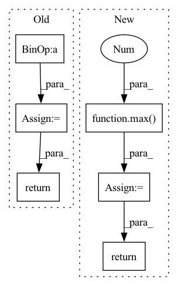

Pattern ID :24601
Before Change
if any([labels is None for labels in all_labels]):
return None
// sampled anchors of all images
num_total_samples = sum([
max(pos_inds.numel() + neg_inds.numel(), 1)
for pos_inds, neg_inds in zip(pos_inds_list, neg_inds_list)
])
// split targets to a list w.r.t. multiple levels
labels_list = images_to_levels(all_labels, num_level_anchors)
label_weights_list = images_to_levels(all_label_weights, num_level_anchors)
bbox_targets_list = images_to_levels(all_bbox_targets, num_level_anchors)
bbox_weights_list = images_to_levels(all_bbox_weights, num_level_anchors)
return (labels_list, label_weights_list, bbox_targets_list,
bbox_weights_list, num_total_samples)
After Change
return None
// sampled anchors of all images
num_total_pos = sum([max(inds.numel(), 1) for inds in pos_inds_list])
num_total_neg = sum([max( inds.numel(), 1 ) for inds in neg_inds_list])
// split targets to a list w.r.t. multiple levels
labels_list = images_to_levels(all_labels, num_level_anchors)
label_weights_list = images_to_levels(all_label_weights, num_level_anchors)
bbox_targets_list = images_to_levels(all_bbox_targets, num_level_anchors)
bbox_weights_list = images_to_levels(all_bbox_weights, num_level_anchors)
return (labels_list, label_weights_list, bbox_targets_list,
bbox_weights_list, num_total_pos, num_total_neg)
In pattern: SUPERPATTERN
Frequency: 4
Non-data size: 6
Instances Fragment ID: 76360533
Project Name: wxinlong/solo
Commit Name: 20e75c2207ca7c4a3fbf8928ce7f1b499bd94118
Time: 2018-10-07
Author: chenkaidev@gmail.com
File Name: mmdet/core/anchor/anchor_target.py
M Class Name: AnonimousClass
N Class Name: AnonimousClass
M Method Name: anchor_target(10)
N Method Name: anchor_target(7)
M Parent Class:
N Parent Class:
M File Name: mmdet/core/anchor/anchor_target.py
N File Name: mmdet/core/anchor/anchor_target.py
M Start Line: 23
M End Line: 56
N Start Line: 14
N End Line: 70
Before Change
if not img.shape:
return np.array([], dtype=np.intp)
return _bbox.bbox(img)
def croptobbox(img, border=None):
After Change
r = _bbox.bbox(img)
if border:
min1,max1,min2,max2 = r
min1 = max(0 , min1-border)
min2 = max(0, min2- border)
max1 += border
max2 += border
return min1,max1,min2,max2
return r
def croptobbox(img, border=None): Fragment ID: 76360532
Project Name: luispedro/mahotas
Commit Name: 65a620443c1f2db4f80362f748035084a7eaaaf8
Time: 2013-07-15
Author: luis@luispedro.org
File Name: mahotas/bbox.py
M Class Name: AnonimousClass
N Class Name: AnonimousClass
M Method Name: bbox(2)
N Method Name: bbox(1)
M Parent Class:
N Parent Class:
M File Name: mahotas/bbox.py
N File Name: mahotas/bbox.py
M Start Line: 11
M End Line: 30
N Start Line: 11
N End Line: 38
Before Change
def run_mypy(file: str) -> int:
return subprocess.run(["mypy", "--config=mypy.ini", f"{str(file)}"]).returncode
def main() -> int:After Change
iteration = 1
while files:
print(f"Iteration {iteration}: running mypy on {len(files)}{" remaining" if iteration > 1 else ""} files")
command = ["mypy", "--config=mypy.ini", "--verbose"] + files
// We pipe stdout and then print it, otherwise lines can appear in the wrong order in builds.
process = subprocess.run(command, stdout=subprocess.PIPE, stderr=subprocess.PIPE, text=True)
for line in process.stdout.split("\n"):
print(line)
// Set of files we are hoping to see mentioned in the mypy log.
files_to_do = set(files)
// Remove from files_to_do everything that"s mentioned in the log.
for line in process.stderr.split("\n"):
for token in line.split():
files_to_do.discard(token)
// If we didn"t manage to discard any files, there"s no point continuing. This should not occur, but if
// it does, we don"t want to continue indefinitely.
if len(files_to_do) == len(files):
print("No further files appear to have been checked!")
return_code = max( return_code, 1 )
break
files = sorted(files_to_do)
return_code = max(return_code, process.returncode)
iteration += 1
return return_code
def main() -> int: Fragment ID: 76360535
Project Name: microsoft/innereye-deeplearning
Commit Name: 1136e23352ac8b4e93705b96bdac9f08120f8399
Time: 2020-08-14
Author: dacart@microsoft.com
File Name: mypy_runner.py
M Class Name: AnonimousClass
N Class Name: AnonimousClass
M Method Name: run_mypy(1)
N Method Name: run_mypy(1)
M Parent Class:
N Parent Class:
M File Name: mypy_runner.py
N File Name: mypy_runner.py
M Start Line: 14
M End Line: 15
N Start Line: 11
N End Line: 45
Before Change
def alpha_gamma(self, word, context):
prefix_counts = self.counts[context]
return self.alpha(word, prefix_counts), self.gamma(prefix_counts)
def alpha(self, word, prefix_counts):
return max(prefix_counts[word] - self.discount, 0.0) / prefix_counts.N()After Change
def alpha_gamma(self, word, context):
prefix_counts = self.counts[context]
prefix_total_ngrams = prefix_counts.N()
alpha = max( prefix_counts[word] - self.discount, 0.0 ) / prefix_total_ngrams
gamma = self.discount * _count_non_zero_vals(prefix_counts) / prefix_total_ngrams
return alpha, gamma
Fragment ID: 76360529
Project Name: nltk/nltk
Commit Name: ce74e449dc9526e19596b1c4a9c510bbb35812cc
Time: 2019-08-11
Author: ilia.kurenkov@gmail.com
File Name: nltk/lm/smoothing.py
M Class Name: KneserNey
N Class Name: KneserNey
M Method Name: alpha_gamma(3)
N Method Name: alpha_gamma(3)
M Parent Class: Smoothing
N Parent Class: Smoothing
M File Name: nltk/lm/smoothing.py
N File Name: nltk/lm/smoothing.py
M Start Line: 52
M End Line: 53
N Start Line: 50
N End Line: 54